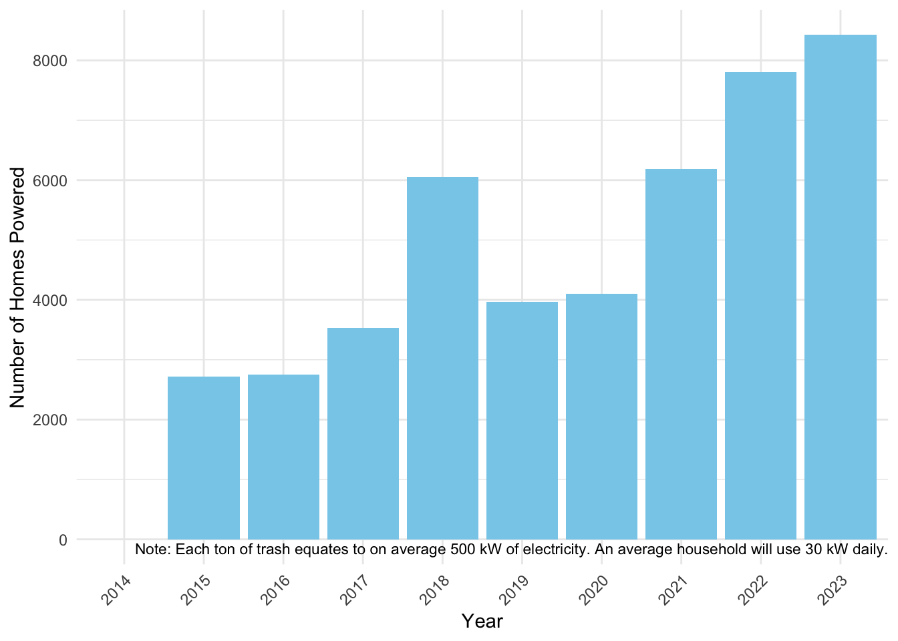

── Attaching core tidyverse packages ──────────────────────── tidyverse 2.0.0 ──
✔ dplyr 1.1.4 ✔ readr 2.1.5
✔ forcats 1.0.0 ✔ stringr 1.5.1
✔ ggplot2 3.5.1 ✔ tibble 3.2.1
✔ lubridate 1.9.3 ✔ tidyr 1.3.1
✔ purrr 1.0.2
── Conflicts ────────────────────────────────────────── tidyverse_conflicts() ──
✖ dplyr::filter() masks stats::filter()
✖ dplyr::lag() masks stats::lag()
ℹ Use the conflicted package (<http://conflicted.r-lib.org/>) to force all conflicts to become errors
here() starts at /Users/akbarre/Desktop/EPI590R-Final-ProjectEPI590R Final Project
Table
The following errors were returned during `add_p()`:
✖ For variable `SportsBalls` (`Name`) and "statistic", "p.value", and
"parameter" statistics: all observations are in the same groupTrash Collected |
Overall 1 |
Trash Wheel Name |
p-value 2 |
|||
|---|---|---|---|---|---|---|
Captain Trash Wheel |
Gwynnda Trash Wheel |
Mister Trash Wheel |
Professor Trash Wheel |
|||
| Plastic Bottles | 1,900 (985, 2,900) | 1,300 (1,010, 1,850) | 1,200 (640, 2,100) | 1,900 (1,020, 2,780) | 4,800 (3,700, 6,800) | <0.001 |
| Missing | 1 | 0 | 0 | 0 | 1 | |
| Polystyrene Items | 750 (240, 2,130) | 745 (320, 940) | 180 (80, 240) | 1,040 (440, 2,250) | 3,400 (750, 7,280) | <0.001 |
| Missing | 1 | 0 | 0 | 0 | 1 | |
| Cigarette Butts | 4,900 (2,900, 12,000) | 3,350 (2,800, 4,200) | 2,200 (1,200, 3,250) | 6,000 (3,600, 22,000) | 8,400 (6,300, 14,000) | <0.001 |
| Missing | 1 | 0 | 0 | 0 | 1 | |
| Glass Bottles | 18 (10, 28) | NA (NA, NA) | NA (NA, NA) | 18 (10, 29) | 18 (8, 26) | 0.11 |
| Missing | 251 | 30 | 220 | 0 | 1 | |
| Plastic Bags | 540 (240, 1,210) | 1,275 (980, 1,650) | 240 (115, 980) | 550 (270, 1,140) | 980 (540, 1,800) | <0.001 |
| Missing | 1 | 0 | 0 | 0 | 1 | |
| Wrappers | 1,400 (880, 2,490) | 1,500 (1,090, 2,200) | 1,400 (980, 2,000) | 1,140 (775, 1,980) | 5,500 (4,300, 9,210) | <0.001 |
| Missing | 144 | 26 | 117 | 0 | 1 | |
| Sports Balls | 12 (6, 20) | NA (NA, NA) | NA (NA, NA) | 12 (6, 20) | NA (NA, NA) | |
| Missing | 364 | 30 | 220 | 0 | 114 | |
| 1
Median (Q1, Q3) |
||||||
| 2
Kruskal-Wallis rank sum test |
||||||
Error in UseMethod("grid.draw"): no applicable method for 'grid.draw' applied to an object of class "c('tbl_summary', 'gtsummary')"
Regression
Error in eval(family$initialize): y values must be 0 <= y <= 1Warning in dpois(y, mu, log = TRUE): non-integer x = 4.310000Warning in dpois(y, mu, log = TRUE): non-integer x = 2.740000Warning in dpois(y, mu, log = TRUE): non-integer x = 3.450000Warning in dpois(y, mu, log = TRUE): non-integer x = 3.100000Warning in dpois(y, mu, log = TRUE): non-integer x = 4.060000Warning in dpois(y, mu, log = TRUE): non-integer x = 2.710000Warning in dpois(y, mu, log = TRUE): non-integer x = 1.910000Warning in dpois(y, mu, log = TRUE): non-integer x = 3.700000Warning in dpois(y, mu, log = TRUE): non-integer x = 2.520000Warning in dpois(y, mu, log = TRUE): non-integer x = 3.760000Warning in dpois(y, mu, log = TRUE): non-integer x = 3.430000Warning in dpois(y, mu, log = TRUE): non-integer x = 4.170000Warning in dpois(y, mu, log = TRUE): non-integer x = 5.130000Warning in dpois(y, mu, log = TRUE): non-integer x = 4.170000Warning in dpois(y, mu, log = TRUE): non-integer x = 3.280000Warning in dpois(y, mu, log = TRUE): non-integer x = 3.050000Warning in dpois(y, mu, log = TRUE): non-integer x = 2.490000Warning in dpois(y, mu, log = TRUE): non-integer x = 2.540000Warning in dpois(y, mu, log = TRUE): non-integer x = 2.410000Warning in dpois(y, mu, log = TRUE): non-integer x = 3.830000Warning in dpois(y, mu, log = TRUE): non-integer x = 2.730000Warning in dpois(y, mu, log = TRUE): non-integer x = 4.400000Warning in dpois(y, mu, log = TRUE): non-integer x = 2.790000Warning in dpois(y, mu, log = TRUE): non-integer x = 2.500000Warning in dpois(y, mu, log = TRUE): non-integer x = 4.390000Warning in dpois(y, mu, log = TRUE): non-integer x = 5.330000Warning in dpois(y, mu, log = TRUE): non-integer x = 3.580000Warning in dpois(y, mu, log = TRUE): non-integer x = 3.100000Warning in dpois(y, mu, log = TRUE): non-integer x = 1.770000Warning in dpois(y, mu, log = TRUE): non-integer x = 3.760000Warning in dpois(y, mu, log = TRUE): non-integer x = 1.240000Warning in dpois(y, mu, log = TRUE): non-integer x = 3.140000Warning in dpois(y, mu, log = TRUE): non-integer x = 2.710000Warning in dpois(y, mu, log = TRUE): non-integer x = 2.110000Warning in dpois(y, mu, log = TRUE): non-integer x = 4.090000Warning in dpois(y, mu, log = TRUE): non-integer x = 2.310000Warning in dpois(y, mu, log = TRUE): non-integer x = 3.500000Warning in dpois(y, mu, log = TRUE): non-integer x = 2.700000Warning in dpois(y, mu, log = TRUE): non-integer x = 3.250000Warning in dpois(y, mu, log = TRUE): non-integer x = 3.840000Warning in dpois(y, mu, log = TRUE): non-integer x = 2.880000Warning in dpois(y, mu, log = TRUE): non-integer x = 1.810000Warning in dpois(y, mu, log = TRUE): non-integer x = 3.480000Warning in dpois(y, mu, log = TRUE): non-integer x = 3.180000Warning in dpois(y, mu, log = TRUE): non-integer x = 2.870000Warning in dpois(y, mu, log = TRUE): non-integer x = 2.140000Warning in dpois(y, mu, log = TRUE): non-integer x = 2.540000Warning in dpois(y, mu, log = TRUE): non-integer x = 3.820000Warning in dpois(y, mu, log = TRUE): non-integer x = 1.830000Warning in dpois(y, mu, log = TRUE): non-integer x = 2.020000Warning in dpois(y, mu, log = TRUE): non-integer x = 2.500000Warning in dpois(y, mu, log = TRUE): non-integer x = 3.410000Warning in dpois(y, mu, log = TRUE): non-integer x = 1.830000Warning in dpois(y, mu, log = TRUE): non-integer x = 3.840000Warning in dpois(y, mu, log = TRUE): non-integer x = 3.220000Warning in dpois(y, mu, log = TRUE): non-integer x = 3.030000Warning in dpois(y, mu, log = TRUE): non-integer x = 2.640000Warning in dpois(y, mu, log = TRUE): non-integer x = 3.540000Warning in dpois(y, mu, log = TRUE): non-integer x = 1.950000Warning in dpois(y, mu, log = TRUE): non-integer x = 4.250000Warning in dpois(y, mu, log = TRUE): non-integer x = 5.620000Warning in dpois(y, mu, log = TRUE): non-integer x = 3.810000Warning in dpois(y, mu, log = TRUE): non-integer x = 3.450000Warning in dpois(y, mu, log = TRUE): non-integer x = 3.340000Warning in dpois(y, mu, log = TRUE): non-integer x = 2.540000Warning in dpois(y, mu, log = TRUE): non-integer x = 4.660000Warning in dpois(y, mu, log = TRUE): non-integer x = 3.390000Warning in dpois(y, mu, log = TRUE): non-integer x = 3.170000Warning in dpois(y, mu, log = TRUE): non-integer x = 3.150000Warning in dpois(y, mu, log = TRUE): non-integer x = 3.830000Warning in dpois(y, mu, log = TRUE): non-integer x = 4.780000Warning in dpois(y, mu, log = TRUE): non-integer x = 3.850000Warning in dpois(y, mu, log = TRUE): non-integer x = 4.480000Warning in dpois(y, mu, log = TRUE): non-integer x = 4.180000Warning in dpois(y, mu, log = TRUE): non-integer x = 3.380000Warning in dpois(y, mu, log = TRUE): non-integer x = 3.830000Warning in dpois(y, mu, log = TRUE): non-integer x = 3.950000Warning in dpois(y, mu, log = TRUE): non-integer x = 2.440000Warning in dpois(y, mu, log = TRUE): non-integer x = 2.850000Warning in dpois(y, mu, log = TRUE): non-integer x = 3.430000Warning in dpois(y, mu, log = TRUE): non-integer x = 4.280000Warning in dpois(y, mu, log = TRUE): non-integer x = 3.940000Warning in dpois(y, mu, log = TRUE): non-integer x = 3.380000Warning in dpois(y, mu, log = TRUE): non-integer x = 3.450000Warning in dpois(y, mu, log = TRUE): non-integer x = 3.930000Warning in dpois(y, mu, log = TRUE): non-integer x = 4.070000Warning in dpois(y, mu, log = TRUE): non-integer x = 3.030000Warning in dpois(y, mu, log = TRUE): non-integer x = 3.520000Warning in dpois(y, mu, log = TRUE): non-integer x = 3.510000Warning in dpois(y, mu, log = TRUE): non-integer x = 3.680000Warning in dpois(y, mu, log = TRUE): non-integer x = 3.400000Warning in dpois(y, mu, log = TRUE): non-integer x = 3.720000Warning in dpois(y, mu, log = TRUE): non-integer x = 1.840000Warning in dpois(y, mu, log = TRUE): non-integer x = 4.330000Warning in dpois(y, mu, log = TRUE): non-integer x = 4.300000Warning in dpois(y, mu, log = TRUE): non-integer x = 3.390000Warning in dpois(y, mu, log = TRUE): non-integer x = 4.080000Warning in dpois(y, mu, log = TRUE): non-integer x = 3.620000Warning in dpois(y, mu, log = TRUE): non-integer x = 2.400000Warning in dpois(y, mu, log = TRUE): non-integer x = 4.240000Warning in dpois(y, mu, log = TRUE): non-integer x = 3.310000Warning in dpois(y, mu, log = TRUE): non-integer x = 2.900000Warning in dpois(y, mu, log = TRUE): non-integer x = 2.460000Warning in dpois(y, mu, log = TRUE): non-integer x = 2.890000Warning in dpois(y, mu, log = TRUE): non-integer x = 4.460000Warning in dpois(y, mu, log = TRUE): non-integer x = 3.420000Warning in dpois(y, mu, log = TRUE): non-integer x = 3.560000Warning in dpois(y, mu, log = TRUE): non-integer x = 1.920000Warning in dpois(y, mu, log = TRUE): non-integer x = 2.900000Warning in dpois(y, mu, log = TRUE): non-integer x = 3.240000Warning in dpois(y, mu, log = TRUE): non-integer x = 4.410000Warning in dpois(y, mu, log = TRUE): non-integer x = 3.390000Warning in dpois(y, mu, log = TRUE): non-integer x = 3.270000Warning in dpois(y, mu, log = TRUE): non-integer x = 3.600000Warning in dpois(y, mu, log = TRUE): non-integer x = 4.060000Warning in dpois(y, mu, log = TRUE): non-integer x = 2.110000Warning in dpois(y, mu, log = TRUE): non-integer x = 3.010000Warning in dpois(y, mu, log = TRUE): non-integer x = 3.410000Warning in dpois(y, mu, log = TRUE): non-integer x = 3.660000Warning in dpois(y, mu, log = TRUE): non-integer x = 4.510000Warning in dpois(y, mu, log = TRUE): non-integer x = 2.890000
Warning in dpois(y, mu, log = TRUE): non-integer x = 2.890000Warning in dpois(y, mu, log = TRUE): non-integer x = 2.510000Warning in dpois(y, mu, log = TRUE): non-integer x = 3.580000Warning in dpois(y, mu, log = TRUE): non-integer x = 3.410000Warning in dpois(y, mu, log = TRUE): non-integer x = 2.790000Warning in dpois(y, mu, log = TRUE): non-integer x = 4.210000Warning in dpois(y, mu, log = TRUE): non-integer x = 4.880000Warning in dpois(y, mu, log = TRUE): non-integer x = 4.470000Warning in dpois(y, mu, log = TRUE): non-integer x = 3.290000Warning in dpois(y, mu, log = TRUE): non-integer x = 4.160000Warning in dpois(y, mu, log = TRUE): non-integer x = 2.930000Warning in dpois(y, mu, log = TRUE): non-integer x = 2.370000Warning in dpois(y, mu, log = TRUE): non-integer x = 2.570000Warning in dpois(y, mu, log = TRUE): non-integer x = 2.390000Warning in dpois(y, mu, log = TRUE): non-integer x = 3.980000Warning in dpois(y, mu, log = TRUE): non-integer x = 3.470000Warning in dpois(y, mu, log = TRUE): non-integer x = 3.970000Warning in dpois(y, mu, log = TRUE): non-integer x = 3.120000Warning in dpois(y, mu, log = TRUE): non-integer x = 3.170000Warning in dpois(y, mu, log = TRUE): non-integer x = 2.120000Warning in dpois(y, mu, log = TRUE): non-integer x = 2.310000Warning in dpois(y, mu, log = TRUE): non-integer x = 3.160000Warning in dpois(y, mu, log = TRUE): non-integer x = 4.020000Warning in dpois(y, mu, log = TRUE): non-integer x = 3.260000Warning in dpois(y, mu, log = TRUE): non-integer x = 3.820000Warning in dpois(y, mu, log = TRUE): non-integer x = 4.880000Warning in dpois(y, mu, log = TRUE): non-integer x = 5.050000Warning in dpois(y, mu, log = TRUE): non-integer x = 2.790000Warning in dpois(y, mu, log = TRUE): non-integer x = 3.470000Warning in dpois(y, mu, log = TRUE): non-integer x = 4.010000Warning in dpois(y, mu, log = TRUE): non-integer x = 3.180000Warning in dpois(y, mu, log = TRUE): non-integer x = 3.130000Warning in dpois(y, mu, log = TRUE): non-integer x = 2.430000Warning in dpois(y, mu, log = TRUE): non-integer x = 3.080000Warning in dpois(y, mu, log = TRUE): non-integer x = 2.900000Warning in dpois(y, mu, log = TRUE): non-integer x = 2.010000Warning in dpois(y, mu, log = TRUE): non-integer x = 1.980000Warning in dpois(y, mu, log = TRUE): non-integer x = 2.750000Warning in dpois(y, mu, log = TRUE): non-integer x = 3.410000Warning in dpois(y, mu, log = TRUE): non-integer x = 2.550000Warning in dpois(y, mu, log = TRUE): non-integer x = 1.740000Warning in dpois(y, mu, log = TRUE): non-integer x = 2.130000Warning in dpois(y, mu, log = TRUE): non-integer x = 2.430000Warning in dpois(y, mu, log = TRUE): non-integer x = 2.320000Warning in dpois(y, mu, log = TRUE): non-integer x = 3.720000Warning in dpois(y, mu, log = TRUE): non-integer x = 2.140000Warning in dpois(y, mu, log = TRUE): non-integer x = 2.740000Warning in dpois(y, mu, log = TRUE): non-integer x = 2.630000Warning in dpois(y, mu, log = TRUE): non-integer x = 2.090000Warning in dpois(y, mu, log = TRUE): non-integer x = 2.670000
Warning in dpois(y, mu, log = TRUE): non-integer x = 2.670000Warning in dpois(y, mu, log = TRUE): non-integer x = 3.550000Warning in dpois(y, mu, log = TRUE): non-integer x = 3.890000Warning in dpois(y, mu, log = TRUE): non-integer x = 3.590000Warning in dpois(y, mu, log = TRUE): non-integer x = 3.130000Warning in dpois(y, mu, log = TRUE): non-integer x = 3.330000Warning in dpois(y, mu, log = TRUE): non-integer x = 3.110000Warning in dpois(y, mu, log = TRUE): non-integer x = 3.040000Warning in dpois(y, mu, log = TRUE): non-integer x = 3.210000Warning in dpois(y, mu, log = TRUE): non-integer x = 4.080000Warning in dpois(y, mu, log = TRUE): non-integer x = 3.260000Warning in dpois(y, mu, log = TRUE): non-integer x = 3.360000Warning in dpois(y, mu, log = TRUE): non-integer x = 3.620000Warning in dpois(y, mu, log = TRUE): non-integer x = 4.270000Warning in dpois(y, mu, log = TRUE): non-integer x = 4.010000Warning in dpois(y, mu, log = TRUE): non-integer x = 3.880000Warning in dpois(y, mu, log = TRUE): non-integer x = 4.670000Warning in dpois(y, mu, log = TRUE): non-integer x = 3.530000Warning in dpois(y, mu, log = TRUE): non-integer x = 4.070000Warning in dpois(y, mu, log = TRUE): non-integer x = 3.930000Warning in dpois(y, mu, log = TRUE): non-integer x = 2.590000Warning in dpois(y, mu, log = TRUE): non-integer x = 3.810000Warning in dpois(y, mu, log = TRUE): non-integer x = 3.300000Warning in dpois(y, mu, log = TRUE): non-integer x = 3.840000Warning in dpois(y, mu, log = TRUE): non-integer x = 4.100000
Warning in dpois(y, mu, log = TRUE): non-integer x = 4.100000Warning in dpois(y, mu, log = TRUE): non-integer x = 2.520000Warning in dpois(y, mu, log = TRUE): non-integer x = 1.950000Warning in dpois(y, mu, log = TRUE): non-integer x = 3.580000Warning in dpois(y, mu, log = TRUE): non-integer x = 1.500000Warning in dpois(y, mu, log = TRUE): non-integer x = 3.630000Warning in dpois(y, mu, log = TRUE): non-integer x = 2.210000Warning in dpois(y, mu, log = TRUE): non-integer x = 4.040000Warning in dpois(y, mu, log = TRUE): non-integer x = 3.870000Warning in dpois(y, mu, log = TRUE): non-integer x = 3.680000Warning in dpois(y, mu, log = TRUE): non-integer x = 2.170000Warning in dpois(y, mu, log = TRUE): non-integer x = 2.100000Warning in dpois(y, mu, log = TRUE): non-integer x = 3.700000Warning in dpois(y, mu, log = TRUE): non-integer x = 3.390000Warning in dpois(y, mu, log = TRUE): non-integer x = 3.140000Warning in dpois(y, mu, log = TRUE): non-integer x = 3.540000Warning in dpois(y, mu, log = TRUE): non-integer x = 3.070000Warning in dpois(y, mu, log = TRUE): non-integer x = 2.150000Warning in dpois(y, mu, log = TRUE): non-integer x = 2.760000
Warning in dpois(y, mu, log = TRUE): non-integer x = 2.760000Warning in dpois(y, mu, log = TRUE): non-integer x = 2.380000Warning in dpois(y, mu, log = TRUE): non-integer x = 2.020000Warning in dpois(y, mu, log = TRUE): non-integer x = 2.170000Warning in dpois(y, mu, log = TRUE): non-integer x = 2.080000Warning in dpois(y, mu, log = TRUE): non-integer x = 3.120000Warning in dpois(y, mu, log = TRUE): non-integer x = 2.450000Warning in dpois(y, mu, log = TRUE): non-integer x = 3.720000Warning in dpois(y, mu, log = TRUE): non-integer x = 3.540000Warning in dpois(y, mu, log = TRUE): non-integer x = 3.190000Warning in dpois(y, mu, log = TRUE): non-integer x = 4.510000Warning in dpois(y, mu, log = TRUE): non-integer x = 2.970000Warning in dpois(y, mu, log = TRUE): non-integer x = 3.780000Warning in dpois(y, mu, log = TRUE): non-integer x = 2.660000Warning in dpois(y, mu, log = TRUE): non-integer x = 2.640000Warning in dpois(y, mu, log = TRUE): non-integer x = 4.300000Warning in dpois(y, mu, log = TRUE): non-integer x = 2.910000Warning in dpois(y, mu, log = TRUE): non-integer x = 3.620000Warning in dpois(y, mu, log = TRUE): non-integer x = 2.400000Warning in dpois(y, mu, log = TRUE): non-integer x = 3.190000Warning in dpois(y, mu, log = TRUE): non-integer x = 3.030000Warning in dpois(y, mu, log = TRUE): non-integer x = 3.260000Warning in dpois(y, mu, log = TRUE): non-integer x = 3.040000Warning in dpois(y, mu, log = TRUE): non-integer x = 3.090000Warning in dpois(y, mu, log = TRUE): non-integer x = 2.720000Warning in dpois(y, mu, log = TRUE): non-integer x = 3.650000Warning in dpois(y, mu, log = TRUE): non-integer x = 3.380000Warning in dpois(y, mu, log = TRUE): non-integer x = 3.440000Warning in dpois(y, mu, log = TRUE): non-integer x = 2.570000Warning in dpois(y, mu, log = TRUE): non-integer x = 3.360000Warning in dpois(y, mu, log = TRUE): non-integer x = 2.720000Warning in dpois(y, mu, log = TRUE): non-integer x = 3.810000Warning in dpois(y, mu, log = TRUE): non-integer x = 3.360000Warning in dpois(y, mu, log = TRUE): non-integer x = 4.290000
Warning in dpois(y, mu, log = TRUE): non-integer x = 4.290000Warning in dpois(y, mu, log = TRUE): non-integer x = 3.250000Warning in dpois(y, mu, log = TRUE): non-integer x = 1.600000Warning in dpois(y, mu, log = TRUE): non-integer x = 3.620000Warning in dpois(y, mu, log = TRUE): non-integer x = 3.190000Warning in dpois(y, mu, log = TRUE): non-integer x = 2.860000Warning in dpois(y, mu, log = TRUE): non-integer x = 4.100000Warning in dpois(y, mu, log = TRUE): non-integer x = 3.380000Warning in dpois(y, mu, log = TRUE): non-integer x = 3.350000Warning in dpois(y, mu, log = TRUE): non-integer x = 3.170000Warning in dpois(y, mu, log = TRUE): non-integer x = 4.190000Warning in dpois(y, mu, log = TRUE): non-integer x = 2.600000Warning in dpois(y, mu, log = TRUE): non-integer x = 4.150000Warning in dpois(y, mu, log = TRUE): non-integer x = 4.230000Warning in dpois(y, mu, log = TRUE): non-integer x = 4.150000Warning in dpois(y, mu, log = TRUE): non-integer x = 4.440000Warning in dpois(y, mu, log = TRUE): non-integer x = 3.120000Warning in dpois(y, mu, log = TRUE): non-integer x = 0.960000Warning in dpois(y, mu, log = TRUE): non-integer x = 2.990000Warning in dpois(y, mu, log = TRUE): non-integer x = 3.490000Warning in dpois(y, mu, log = TRUE): non-integer x = 4.390000Warning in dpois(y, mu, log = TRUE): non-integer x = 3.570000Warning in dpois(y, mu, log = TRUE): non-integer x = 3.790000Warning in dpois(y, mu, log = TRUE): non-integer x = 4.240000Warning in dpois(y, mu, log = TRUE): non-integer x = 3.490000Warning in dpois(y, mu, log = TRUE): non-integer x = 4.160000Warning in dpois(y, mu, log = TRUE): non-integer x = 3.170000Warning in dpois(y, mu, log = TRUE): non-integer x = 3.310000Warning in dpois(y, mu, log = TRUE): non-integer x = 3.320000Warning in dpois(y, mu, log = TRUE): non-integer x = 3.980000Warning in dpois(y, mu, log = TRUE): non-integer x = 3.840000Warning in dpois(y, mu, log = TRUE): non-integer x = 3.310000Warning in dpois(y, mu, log = TRUE): non-integer x = 4.620000Warning in dpois(y, mu, log = TRUE): non-integer x = 3.740000Warning in dpois(y, mu, log = TRUE): non-integer x = 3.270000Warning in dpois(y, mu, log = TRUE): non-integer x = 3.040000Warning in dpois(y, mu, log = TRUE): non-integer x = 2.430000Warning in dpois(y, mu, log = TRUE): non-integer x = 3.350000Warning in dpois(y, mu, log = TRUE): non-integer x = 3.500000Warning in dpois(y, mu, log = TRUE): non-integer x = 4.250000Warning in dpois(y, mu, log = TRUE): non-integer x = 3.770000Warning in dpois(y, mu, log = TRUE): non-integer x = 2.260000Warning in dpois(y, mu, log = TRUE): non-integer x = 3.090000Warning in dpois(y, mu, log = TRUE): non-integer x = 2.950000Warning in dpois(y, mu, log = TRUE): non-integer x = 3.280000Warning in dpois(y, mu, log = TRUE): non-integer x = 3.100000Warning in dpois(y, mu, log = TRUE): non-integer x = 3.040000Warning in dpois(y, mu, log = TRUE): non-integer x = 3.110000Warning in dpois(y, mu, log = TRUE): non-integer x = 2.260000Warning in dpois(y, mu, log = TRUE): non-integer x = 3.460000Warning in dpois(y, mu, log = TRUE): non-integer x = 4.540000Warning in dpois(y, mu, log = TRUE): non-integer x = 3.190000Warning in dpois(y, mu, log = TRUE): non-integer x = 3.170000Warning in dpois(y, mu, log = TRUE): non-integer x = 2.780000Warning in dpois(y, mu, log = TRUE): non-integer x = 2.770000Warning in dpois(y, mu, log = TRUE): non-integer x = 3.260000Warning in dpois(y, mu, log = TRUE): non-integer x = 3.530000Warning in dpois(y, mu, log = TRUE): non-integer x = 3.380000Warning in dpois(y, mu, log = TRUE): non-integer x = 2.960000Warning in dpois(y, mu, log = TRUE): non-integer x = 3.620000Warning in dpois(y, mu, log = TRUE): non-integer x = 2.500000Warning in dpois(y, mu, log = TRUE): non-integer x = 3.070000Warning in dpois(y, mu, log = TRUE): non-integer x = 2.330000Warning in dpois(y, mu, log = TRUE): non-integer x = 3.240000Warning in dpois(y, mu, log = TRUE): non-integer x = 2.520000Warning in dpois(y, mu, log = TRUE): non-integer x = 2.270000Warning in dpois(y, mu, log = TRUE): non-integer x = 3.060000Warning in dpois(y, mu, log = TRUE): non-integer x = 3.330000Warning in dpois(y, mu, log = TRUE): non-integer x = 3.030000Warning in dpois(y, mu, log = TRUE): non-integer x = 2.600000Warning in dpois(y, mu, log = TRUE): non-integer x = 2.260000Warning in dpois(y, mu, log = TRUE): non-integer x = 3.520000Warning in dpois(y, mu, log = TRUE): non-integer x = 3.840000Warning in dpois(y, mu, log = TRUE): non-integer x = 3.570000Warning in dpois(y, mu, log = TRUE): non-integer x = 5.100000Warning in dpois(y, mu, log = TRUE): non-integer x = 3.530000Warning in dpois(y, mu, log = TRUE): non-integer x = 3.040000Warning in dpois(y, mu, log = TRUE): non-integer x = 3.070000Warning in dpois(y, mu, log = TRUE): non-integer x = 3.230000Warning in dpois(y, mu, log = TRUE): non-integer x = 3.730000Warning in dpois(y, mu, log = TRUE): non-integer x = 3.380000Warning in dpois(y, mu, log = TRUE): non-integer x = 2.920000Warning in dpois(y, mu, log = TRUE): non-integer x = 2.830000Warning in dpois(y, mu, log = TRUE): non-integer x = 2.760000Warning in dpois(y, mu, log = TRUE): non-integer x = 2.510000Warning in dpois(y, mu, log = TRUE): non-integer x = 2.720000Warning in dpois(y, mu, log = TRUE): non-integer x = 3.190000Warning in dpois(y, mu, log = TRUE): non-integer x = 3.230000Warning in dpois(y, mu, log = TRUE): non-integer x = 3.080000Warning in dpois(y, mu, log = TRUE): non-integer x = 3.020000Warning in dpois(y, mu, log = TRUE): non-integer x = 2.080000Warning in dpois(y, mu, log = TRUE): non-integer x = 2.030000Warning in dpois(y, mu, log = TRUE): non-integer x = 2.480000Warning in dpois(y, mu, log = TRUE): non-integer x = 3.340000Warning in dpois(y, mu, log = TRUE): non-integer x = 2.690000Warning in dpois(y, mu, log = TRUE): non-integer x = 2.570000Warning in dpois(y, mu, log = TRUE): non-integer x = 3.450000Warning in dpois(y, mu, log = TRUE): non-integer x = 2.250000Warning in dpois(y, mu, log = TRUE): non-integer x = 2.480000Warning in dpois(y, mu, log = TRUE): non-integer x = 3.130000Warning in dpois(y, mu, log = TRUE): non-integer x = 2.650000Warning in dpois(y, mu, log = TRUE): non-integer x = 3.960000Warning in dpois(y, mu, log = TRUE): non-integer x = 2.610000Warning in dpois(y, mu, log = TRUE): non-integer x = 3.820000Warning in dpois(y, mu, log = TRUE): non-integer x = 2.660000Warning in dpois(y, mu, log = TRUE): non-integer x = 4.250000Warning in dpois(y, mu, log = TRUE): non-integer x = 2.960000Warning in dpois(y, mu, log = TRUE): non-integer x = 3.170000Warning in dpois(y, mu, log = TRUE): non-integer x = 3.070000Warning in dpois(y, mu, log = TRUE): non-integer x = 2.410000Warning in dpois(y, mu, log = TRUE): non-integer x = 3.210000Warning in dpois(y, mu, log = TRUE): non-integer x = 3.250000Warning in dpois(y, mu, log = TRUE): non-integer x = 3.430000Warning in dpois(y, mu, log = TRUE): non-integer x = 3.280000Warning in dpois(y, mu, log = TRUE): non-integer x = 2.660000Warning in dpois(y, mu, log = TRUE): non-integer x = 2.980000Warning in dpois(y, mu, log = TRUE): non-integer x = 3.050000Warning in dpois(y, mu, log = TRUE): non-integer x = 2.230000Warning in dpois(y, mu, log = TRUE): non-integer x = 3.200000
Warning in dpois(y, mu, log = TRUE): non-integer x = 3.200000Warning in dpois(y, mu, log = TRUE): non-integer x = 3.580000Warning in dpois(y, mu, log = TRUE): non-integer x = 3.880000Warning in dpois(y, mu, log = TRUE): non-integer x = 2.250000Warning in dpois(y, mu, log = TRUE): non-integer x = 2.720000Warning in dpois(y, mu, log = TRUE): non-integer x = 2.780000Warning in dpois(y, mu, log = TRUE): non-integer x = 2.750000Warning in dpois(y, mu, log = TRUE): non-integer x = 1.800000Warning in dpois(y, mu, log = TRUE): non-integer x = 2.900000Warning in dpois(y, mu, log = TRUE): non-integer x = 2.540000Warning in dpois(y, mu, log = TRUE): non-integer x = 2.180000Warning in dpois(y, mu, log = TRUE): non-integer x = 3.240000Warning in dpois(y, mu, log = TRUE): non-integer x = 3.070000Warning in dpois(y, mu, log = TRUE): non-integer x = 2.800000
Warning in dpois(y, mu, log = TRUE): non-integer x = 2.800000Warning in dpois(y, mu, log = TRUE): non-integer x = 1.900000Warning in dpois(y, mu, log = TRUE): non-integer x = 2.340000Warning in dpois(y, mu, log = TRUE): non-integer x = 2.150000Warning in dpois(y, mu, log = TRUE): non-integer x = 3.860000Warning in dpois(y, mu, log = TRUE): non-integer x = 3.980000Warning in dpois(y, mu, log = TRUE): non-integer x = 4.620000Warning in dpois(y, mu, log = TRUE): non-integer x = 3.360000Warning in dpois(y, mu, log = TRUE): non-integer x = 2.910000Warning in dpois(y, mu, log = TRUE): non-integer x = 3.500000Warning in dpois(y, mu, log = TRUE): non-integer x = 3.130000Warning in dpois(y, mu, log = TRUE): non-integer x = 3.060000Warning in dpois(y, mu, log = TRUE): non-integer x = 3.170000Warning in dpois(y, mu, log = TRUE): non-integer x = 4.220000Warning in dpois(y, mu, log = TRUE): non-integer x = 3.680000Warning in dpois(y, mu, log = TRUE): non-integer x = 3.980000Warning in dpois(y, mu, log = TRUE): non-integer x = 2.550000Warning in dpois(y, mu, log = TRUE): non-integer x = 0.780000Warning in dpois(y, mu, log = TRUE): non-integer x = 3.040000Warning in dpois(y, mu, log = TRUE): non-integer x = 3.790000Warning in dpois(y, mu, log = TRUE): non-integer x = 3.840000Warning in dpois(y, mu, log = TRUE): non-integer x = 3.960000Warning in dpois(y, mu, log = TRUE): non-integer x = 3.290000Warning in dpois(y, mu, log = TRUE): non-integer x = 3.350000Warning in dpois(y, mu, log = TRUE): non-integer x = 3.440000Warning in dpois(y, mu, log = TRUE): non-integer x = 3.780000Warning in dpois(y, mu, log = TRUE): non-integer x = 2.930000Warning in dpois(y, mu, log = TRUE): non-integer x = 3.340000Warning in dpois(y, mu, log = TRUE): non-integer x = 2.140000Warning in dpois(y, mu, log = TRUE): non-integer x = 3.100000Warning in dpois(y, mu, log = TRUE): non-integer x = 3.050000Warning in dpois(y, mu, log = TRUE): non-integer x = 3.110000Warning in dpois(y, mu, log = TRUE): non-integer x = 3.320000Warning in dpois(y, mu, log = TRUE): non-integer x = 2.920000Warning in dpois(y, mu, log = TRUE): non-integer x = 2.980000Warning in dpois(y, mu, log = TRUE): non-integer x = 1.890000Warning in dpois(y, mu, log = TRUE): non-integer x = 2.700000Warning in dpois(y, mu, log = TRUE): non-integer x = 1.410000Warning in dpois(y, mu, log = TRUE): non-integer x = 3.520000Warning in dpois(y, mu, log = TRUE): non-integer x = 3.390000Warning in dpois(y, mu, log = TRUE): non-integer x = 2.360000Warning in dpois(y, mu, log = TRUE): non-integer x = 3.190000Warning in dpois(y, mu, log = TRUE): non-integer x = 3.020000Warning in dpois(y, mu, log = TRUE): non-integer x = 2.980000Warning in dpois(y, mu, log = TRUE): non-integer x = 3.390000Warning in dpois(y, mu, log = TRUE): non-integer x = 4.290000Warning in dpois(y, mu, log = TRUE): non-integer x = 3.620000Warning in dpois(y, mu, log = TRUE): non-integer x = 2.450000Warning in dpois(y, mu, log = TRUE): non-integer x = 2.920000Warning in dpois(y, mu, log = TRUE): non-integer x = 3.070000Warning in dpois(y, mu, log = TRUE): non-integer x = 2.420000Warning in dpois(y, mu, log = TRUE): non-integer x = 3.110000Warning in dpois(y, mu, log = TRUE): non-integer x = 2.920000Warning in dpois(y, mu, log = TRUE): non-integer x = 1.940000Warning in dpois(y, mu, log = TRUE): non-integer x = 3.020000Warning in dpois(y, mu, log = TRUE): non-integer x = 2.790000Warning in dpois(y, mu, log = TRUE): non-integer x = 2.010000Warning in dpois(y, mu, log = TRUE): non-integer x = 3.350000Warning in dpois(y, mu, log = TRUE): non-integer x = 3.340000Warning in dpois(y, mu, log = TRUE): non-integer x = 3.080000Warning in dpois(y, mu, log = TRUE): non-integer x = 2.730000Warning in dpois(y, mu, log = TRUE): non-integer x = 2.120000Warning in dpois(y, mu, log = TRUE): non-integer x = 2.810000Warning in dpois(y, mu, log = TRUE): non-integer x = 2.430000Warning in dpois(y, mu, log = TRUE): non-integer x = 2.690000Warning in dpois(y, mu, log = TRUE): non-integer x = 1.830000Warning in dpois(y, mu, log = TRUE): non-integer x = 3.140000Warning in dpois(y, mu, log = TRUE): non-integer x = 2.720000Warning in dpois(y, mu, log = TRUE): non-integer x = 3.340000Warning in dpois(y, mu, log = TRUE): non-integer x = 3.640000Warning in dpois(y, mu, log = TRUE): non-integer x = 2.950000Warning in dpois(y, mu, log = TRUE): non-integer x = 2.340000Warning in dpois(y, mu, log = TRUE): non-integer x = 2.550000Warning in dpois(y, mu, log = TRUE): non-integer x = 3.500000Warning in dpois(y, mu, log = TRUE): non-integer x = 5.030000Warning in dpois(y, mu, log = TRUE): non-integer x = 3.900000Warning in dpois(y, mu, log = TRUE): non-integer x = 3.660000Warning in dpois(y, mu, log = TRUE): non-integer x = 3.690000Warning in dpois(y, mu, log = TRUE): non-integer x = 3.770000Warning in dpois(y, mu, log = TRUE): non-integer x = 4.270000Warning in dpois(y, mu, log = TRUE): non-integer x = 3.030000Warning in dpois(y, mu, log = TRUE): non-integer x = 3.830000Warning in dpois(y, mu, log = TRUE): non-integer x = 3.300000Warning in dpois(y, mu, log = TRUE): non-integer x = 3.900000Warning in dpois(y, mu, log = TRUE): non-integer x = 2.780000Warning in dpois(y, mu, log = TRUE): non-integer x = 2.670000Warning in dpois(y, mu, log = TRUE): non-integer x = 3.580000Warning in dpois(y, mu, log = TRUE): non-integer x = 4.500000Warning in dpois(y, mu, log = TRUE): non-integer x = 3.910000Warning in dpois(y, mu, log = TRUE): non-integer x = 1.320000Warning in dpois(y, mu, log = TRUE): non-integer x = 2.310000Warning in dpois(y, mu, log = TRUE): non-integer x = 3.660000Warning in dpois(y, mu, log = TRUE): non-integer x = 2.070000Warning in dpois(y, mu, log = TRUE): non-integer x = 3.800000Warning in dpois(y, mu, log = TRUE): non-integer x = 3.970000Warning in dpois(y, mu, log = TRUE): non-integer x = 5.200000Warning in dpois(y, mu, log = TRUE): non-integer x = 1.660000Warning in dpois(y, mu, log = TRUE): non-integer x = 2.180000Warning in dpois(y, mu, log = TRUE): non-integer x = 4.010000Warning in dpois(y, mu, log = TRUE): non-integer x = 2.900000Warning in dpois(y, mu, log = TRUE): non-integer x = 4.120000Warning in dpois(y, mu, log = TRUE): non-integer x = 2.920000Warning in dpois(y, mu, log = TRUE): non-integer x = 3.380000Warning in dpois(y, mu, log = TRUE): non-integer x = 3.810000Warning in dpois(y, mu, log = TRUE): non-integer x = 2.610000Warning in dpois(y, mu, log = TRUE): non-integer x = 3.020000Warning in dpois(y, mu, log = TRUE): non-integer x = 2.540000Warning in dpois(y, mu, log = TRUE): non-integer x = 3.090000Warning in dpois(y, mu, log = TRUE): non-integer x = 3.730000Warning in dpois(y, mu, log = TRUE): non-integer x = 3.890000Warning in dpois(y, mu, log = TRUE): non-integer x = 3.900000Warning in dpois(y, mu, log = TRUE): non-integer x = 3.720000Warning in dpois(y, mu, log = TRUE): non-integer x = 2.660000Warning in dpois(y, mu, log = TRUE): non-integer x = 3.550000Warning in dpois(y, mu, log = TRUE): non-integer x = 2.800000Warning in dpois(y, mu, log = TRUE): non-integer x = 3.220000Warning in dpois(y, mu, log = TRUE): non-integer x = 1.900000Warning in dpois(y, mu, log = TRUE): non-integer x = 1.830000Warning in dpois(y, mu, log = TRUE): non-integer x = 2.200000Warning in dpois(y, mu, log = TRUE): non-integer x = 2.990000Warning in dpois(y, mu, log = TRUE): non-integer x = 3.120000Warning in dpois(y, mu, log = TRUE): non-integer x = 2.860000Warning in dpois(y, mu, log = TRUE): non-integer x = 2.720000Warning in dpois(y, mu, log = TRUE): non-integer x = 2.150000Warning in dpois(y, mu, log = TRUE): non-integer x = 2.710000Warning in dpois(y, mu, log = TRUE): non-integer x = 4.660000Warning in dpois(y, mu, log = TRUE): non-integer x = 2.350000Warning in dpois(y, mu, log = TRUE): non-integer x = 2.750000Warning in dpois(y, mu, log = TRUE): non-integer x = 2.590000Warning in dpois(y, mu, log = TRUE): non-integer x = 3.700000Warning in dpois(y, mu, log = TRUE): non-integer x = 2.610000Warning in dpois(y, mu, log = TRUE): non-integer x = 3.970000Warning in dpois(y, mu, log = TRUE): non-integer x = 4.510000Warning in dpois(y, mu, log = TRUE): non-integer x = 2.830000Warning in dpois(y, mu, log = TRUE): non-integer x = 4.140000Warning in dpois(y, mu, log = TRUE): non-integer x = 3.210000Warning in dpois(y, mu, log = TRUE): non-integer x = 3.830000Warning in dpois(y, mu, log = TRUE): non-integer x = 3.970000Warning in dpois(y, mu, log = TRUE): non-integer x = 4.020000Warning in dpois(y, mu, log = TRUE): non-integer x = 3.760000Warning in dpois(y, mu, log = TRUE): non-integer x = 3.180000Warning in dpois(y, mu, log = TRUE): non-integer x = 4.020000Warning in dpois(y, mu, log = TRUE): non-integer x = 3.360000Warning in dpois(y, mu, log = TRUE): non-integer x = 1.640000Warning in dpois(y, mu, log = TRUE): non-integer x = 3.760000Warning in dpois(y, mu, log = TRUE): non-integer x = 1.970000Warning in dpois(y, mu, log = TRUE): non-integer x = 3.960000Warning in dpois(y, mu, log = TRUE): non-integer x = 3.770000Warning in dpois(y, mu, log = TRUE): non-integer x = 3.250000Warning in dpois(y, mu, log = TRUE): non-integer x = 2.750000Warning in dpois(y, mu, log = TRUE): non-integer x = 2.700000Warning in dpois(y, mu, log = TRUE): non-integer x = 3.390000Warning in dpois(y, mu, log = TRUE): non-integer x = 2.820000Warning in dpois(y, mu, log = TRUE): non-integer x = 2.030000Warning in dpois(y, mu, log = TRUE): non-integer x = 1.690000Warning in dpois(y, mu, log = TRUE): non-integer x = 2.840000Warning in dpois(y, mu, log = TRUE): non-integer x = 2.250000Warning in dpois(y, mu, log = TRUE): non-integer x = 3.090000Warning in dpois(y, mu, log = TRUE): non-integer x = 3.670000Warning in dpois(y, mu, log = TRUE): non-integer x = 3.640000Warning in dpois(y, mu, log = TRUE): non-integer x = 3.780000Warning in dpois(y, mu, log = TRUE): non-integer x = 3.690000Warning in dpois(y, mu, log = TRUE): non-integer x = 3.880000Warning in dpois(y, mu, log = TRUE): non-integer x = 4.180000Warning in dpois(y, mu, log = TRUE): non-integer x = 2.730000Warning in dpois(y, mu, log = TRUE): non-integer x = 4.390000Warning in dpois(y, mu, log = TRUE): non-integer x = 2.030000Warning in dpois(y, mu, log = TRUE): non-integer x = 3.120000Warning in dpois(y, mu, log = TRUE): non-integer x = 2.270000Warning in dpois(y, mu, log = TRUE): non-integer x = 2.540000Warning in dpois(y, mu, log = TRUE): non-integer x = 3.270000Warning in dpois(y, mu, log = TRUE): non-integer x = 2.790000Warning in dpois(y, mu, log = TRUE): non-integer x = 3.150000Warning in dpois(y, mu, log = TRUE): non-integer x = 3.020000Warning in dpois(y, mu, log = TRUE): non-integer x = 3.360000Warning in dpois(y, mu, log = TRUE): non-integer x = 3.230000Warning in dpois(y, mu, log = TRUE): non-integer x = 3.030000Warning in dpois(y, mu, log = TRUE): non-integer x = 3.530000Warning in dpois(y, mu, log = TRUE): non-integer x = 3.140000Warning in dpois(y, mu, log = TRUE): non-integer x = 3.410000Warning in dpois(y, mu, log = TRUE): non-integer x = 4.780000Warning in dpois(y, mu, log = TRUE): non-integer x = 5.310000Warning in dpois(y, mu, log = TRUE): non-integer x = 2.970000Warning in dpois(y, mu, log = TRUE): non-integer x = 3.660000Warning in dpois(y, mu, log = TRUE): non-integer x = 4.870000Warning in dpois(y, mu, log = TRUE): non-integer x = 5.310000Warning in dpois(y, mu, log = TRUE): non-integer x = 3.660000Warning in dpois(y, mu, log = TRUE): non-integer x = 2.620000Warning in dpois(y, mu, log = TRUE): non-integer x = 3.560000Warning in dpois(y, mu, log = TRUE): non-integer x = 3.790000Warning in dpois(y, mu, log = TRUE): non-integer x = 2.280000Warning in dpois(y, mu, log = TRUE): non-integer x = 3.900000Warning in dpois(y, mu, log = TRUE): non-integer x = 4.080000Warning in dpois(y, mu, log = TRUE): non-integer x = 4.360000Warning in dpois(y, mu, log = TRUE): non-integer x = 4.230000Warning in dpois(y, mu, log = TRUE): non-integer x = 3.710000Warning in dpois(y, mu, log = TRUE): non-integer x = 3.580000Warning in dpois(y, mu, log = TRUE): non-integer x = 3.790000Warning in dpois(y, mu, log = TRUE): non-integer x = 3.880000Warning in dpois(y, mu, log = TRUE): non-integer x = 3.810000Warning in dpois(y, mu, log = TRUE): non-integer x = 3.820000Warning in dpois(y, mu, log = TRUE): non-integer x = 1.890000Warning in dpois(y, mu, log = TRUE): non-integer x = 3.580000Warning in dpois(y, mu, log = TRUE): non-integer x = 3.670000Warning in dpois(y, mu, log = TRUE): non-integer x = 2.910000Warning in dpois(y, mu, log = TRUE): non-integer x = 4.440000Warning in dpois(y, mu, log = TRUE): non-integer x = 3.410000Warning in dpois(y, mu, log = TRUE): non-integer x = 3.830000Warning in dpois(y, mu, log = TRUE): non-integer x = 2.670000Warning in dpois(y, mu, log = TRUE): non-integer x = 2.150000Warning in dpois(y, mu, log = TRUE): non-integer x = 3.080000Warning in dpois(y, mu, log = TRUE): non-integer x = 2.770000Warning in dpois(y, mu, log = TRUE): non-integer x = 3.550000Warning in dpois(y, mu, log = TRUE): non-integer x = 3.510000Warning in dpois(y, mu, log = TRUE): non-integer x = 3.320000Warning in dpois(y, mu, log = TRUE): non-integer x = 3.100000Warning in dpois(y, mu, log = TRUE): non-integer x = 3.970000Warning in dpois(y, mu, log = TRUE): non-integer x = 2.860000Warning in dpois(y, mu, log = TRUE): non-integer x = 3.530000Warning in dpois(y, mu, log = TRUE): non-integer x = 2.390000Warning in dpois(y, mu, log = TRUE): non-integer x = 3.260000Warning in dpois(y, mu, log = TRUE): non-integer x = 3.550000Warning in dpois(y, mu, log = TRUE): non-integer x = 2.270000Warning in dpois(y, mu, log = TRUE): non-integer x = 2.190000Warning in dpois(y, mu, log = TRUE): non-integer x = 3.360000Warning in dpois(y, mu, log = TRUE): non-integer x = 2.930000Warning in dpois(y, mu, log = TRUE): non-integer x = 2.460000Warning in dpois(y, mu, log = TRUE): non-integer x = 3.230000Warning in dpois(y, mu, log = TRUE): non-integer x = 2.070000Warning in dpois(y, mu, log = TRUE): non-integer x = 2.630000Warning in dpois(y, mu, log = TRUE): non-integer x = 2.950000Warning in dpois(y, mu, log = TRUE): non-integer x = 3.180000Warning in dpois(y, mu, log = TRUE): non-integer x = 3.730000Warning in dpois(y, mu, log = TRUE): non-integer x = 3.010000Warning in dpois(y, mu, log = TRUE): non-integer x = 2.340000Warning in dpois(y, mu, log = TRUE): non-integer x = 2.880000Warning in dpois(y, mu, log = TRUE): non-integer x = 2.510000Error in eval(expr, envir, enclos): object 'logistic_model' not foundError:
! Error in `tbl_regression()`: ! The packages "insight" (>= 0.15.0) and
"parameters" (>= 0.20.2) are required.
Figure

InLine & Cross-Reference
Error: glue cannot interpolate functions into strings.
* object 'n' is a function.Error: glue cannot interpolate functions into strings.
* object 'n' is a function.- Figure 1 illustrates the number of homes powered each year, with a note highlighting that each ton of trash generates an average of 500 kW of electricity, sufficient for an average household’s daily consumption of 30 kW.
- Table 1 displays the types and quantities of trash collected, categorized by trash wheel name, including statistics and overall results, with missing values labeled as ‘Missing’ and p-values highlighted.
- Table 2 contains results from the logistic regression.
- Table 3 contains results from the poisson regression.
- There were 993 Trash Wheels in the Mr. Trash Wheel Baltimore Healthy Harbor initiative, with an average of 1.31095^{5}, 9.4567^{4}, 1.13718^{5}, 1.08035^{5}, 1.2305^{5}, 9.5437^{4}, 5.9143^{4}, 1.24521^{5}, 1.06217^{5}, 1.34666^{5}, 1.12541^{5}, 1.3639^{5}, 1.05809^{5}, 1.02643^{5}, 1.05865^{5}, 1.11911^{5}, 9.3793^{4}, 1.13742^{5}, 1.132^{5}, 1.52231^{5}, 1.1976^{5}, 1.21466^{5}, 1.09219^{5}, 9.3886^{4}, 1.2493^{5}, 1.28492^{5}, 1.53717^{5}, 1.26066^{5}, 3.5125^{4}, 3.22637^{5}, 2.0884^{4}, 1.20228^{5}, 9.6644^{4}, 8.6554^{4}, 8.6284^{4}, 8.7268^{4}, 1.04637^{5}, 2.7144^{4}, 5.3485^{4}, 4.023^{4}, 6.0218^{4}, 4.5115^{4}, 2.606^{4}, 3.0778^{4}, 3.8047^{4}, 3.8303^{4}, 3.3641^{4}, 2.7331^{4}, 3.2544^{4}, 4.239^{4}, 3.5251^{4}, 3.2769^{4}, 3.9598^{4}, 2.226^{4}, 2.7083^{4}, 2.2554^{4}, 2.4996^{4}, 2.5539^{4}, 2.0983^{4}, 2.6234^{4}, 4.7168^{4}, 6.1482^{4}, 5.6437^{4}, 3.8488^{4}, 4.6186^{4}, 6.2542^{4}, 5.7338^{4}, 4.3837^{4}, 3.8987^{4}, 4.0992^{4}, 3.6864^{4}, 3.5731^{4}, 3.8199^{4}, 4.3263^{4}, 4.2118^{4}, 3.8174^{4}, 4.0004^{4}, 7.6723^{4}, 8.3733^{4}, 7.8797^{4}, 9.2211^{4}, 5.2182^{4}, 4.3172^{4}, 7.909^{4}, 8.482^{4}, 4.4192^{4}, 9.2324^{4}, 7.8294^{4}, 7.5536^{4}, 8.6715^{4}, 9.3674^{4}, 8.6951^{4}, 7.8523^{4}, 3.7599^{4}, 7.8368^{4}, 5.5653^{4}, 4552, 3.4351^{4}, 6.5042^{4}, 3.1958^{4}, 2.7938^{4}, 5.053^{4}, 3.4474^{4}, 5.276^{4}, 4.3156^{4}, 4.6838^{4}, 3.8524^{4}, 3.0427^{4}, 3.2797^{4}, 4.0921^{4}, 4.3579^{4}, 3.3754^{4}, 5.2624^{4}, 3.5339^{4}, 4.8081^{4}, 3.9411^{4}, 3.6286^{4}, 4.2087^{4}, 3.7474^{4}, 3.0518^{4}, 2.6116^{4}, 4.7042^{4}, 3.9358^{4}, 2.605^{4}, 2.4401^{4}, 5.9264^{4}, 5.7281^{4}, 5.106^{4}, 6.1824^{4}, 6.6629^{4}, 5.9083^{4}, 6.4697^{4}, 6.8009^{4}, 5.8898^{4}, 6.8167^{4}, 5.0166^{4}, 5.247^{4}, 5.7306^{4}, 6.3823^{4}, 5.9417^{4}, 7.1372^{4}, 5.5259^{4}, 6.2131^{4}, 7.7387^{4}, 6.608^{4}, 6.9232^{4}, 7.9263^{4}, 4.3401^{4}, 4.1027^{4}, 2.3613^{4}, 4.4773^{4}, 4.8699^{4}, 5.4624^{4}, 6.33^{4}, 4.8416^{4}, 3.486^{4}, 3.2121^{4}, 3.6707^{4}, 2.9853^{4}, 4.0788^{4}, 4.6959^{4}, 3.2066^{4}, 3.6919^{4}, 4.5833^{4}, 3.6989^{4}, 4.4943^{4}, 3.9608^{4}, 4.1251^{4}, 2.3535^{4}, 3.4102^{4}, 2.2516^{4}, 1.9935^{4}, 1.9089^{4}, 2.1899^{4}, 2.1899^{4}, 9941, 8347, 5975, 6866, 4430, 6148, 4495, 5249, 5647, 4676, 3719, 5678, 3859, 4505, 3643, 2.2032^{4}, 2.9222^{4}, 2.6223^{4}, 2.589^{4}, 2.9374^{4}, 2.9467^{4}, 2.494^{4}, 2.4181^{4}, 2.8162^{4}, 3.4365^{4}, 3.8134^{4}, 2.7658^{4}, 3.5432^{4}, 2.1993^{4}, 4.5546^{4}, 2.2773^{4}, 1.4403^{4}, 3.0351^{4}, 3.9644^{4}, 2.9267^{4}, 3.3331^{4}, 3.7707^{4}, 1.6288^{4}, 1.3101^{4}, 1.7436^{4}, 1.9677^{4}, 2.3854^{4}, 2.0232^{4}, 1.9676^{4}, 2.1306^{4}, 2.0953^{4}, 2.552^{4}, 3.048^{4}, 2.7822^{4}, 2.7393^{4}, 2.0697^{4}, 1.9589^{4}, 3.2532^{4}, 1.6665^{4}, 1.586^{4}, 2.2811^{4}, 1.7038^{4}, 2.6008^{4}, 2.7823^{4}, 3.0868^{4}, 1.1173^{4}, 9707, 1.0556^{4}, 8177, 7357, 8467, 9365, 9718, 8498, 9570, 8594, 8580, 8264, 9588, 1.0535^{4}, 1.8005^{4}, 1.8763^{4}, 2.144^{4}, 2.5146^{4}, 1.1716^{4}, 1.0106^{4}, 5712, 9666, 1.4746^{4}, 1.2808^{4}, 1.4893^{4}, 1.8381^{4}, 1.9826^{4}, 2.049^{4}, 1.2686^{4}, 1.3415^{4}, 1.1346^{4}, 1.4938^{4}, 1.4276^{4}, 8187, 1.9337^{4}, 1.8316^{4}, 1.8671^{4}, 1.5731^{4}, 1.0969^{4}, 8795, 6093, 7225, 1.0303^{4}, 9598, 8553, 1.2386^{4}, 9723, 7641, 1.0375^{4}, 1.6312^{4}, 9425, 1.4048^{4}, 8124, 8024, 1.3692^{4}, 9810, 1.2144^{4}, 5376, 9126, 1.264^{4}, 1.3035^{4}, 1.4526^{4}, 1.0059^{4}, 1.0184^{4}, 1.3469^{4}, 1.0898^{4}, 9202, 5764, 4418, 1.163^{4}, 1.2842^{4}, 1.073^{4}, 1.0354^{4}, 9547, 8298, 6128, 3198, 3404, 9369, 1.0848^{4}, 6722, 1.2715^{4}, 1.3868^{4}, 1.6114^{4}, 6683, 4860, 3981, 2845, 8907, 1.2625^{4}, 4647, 1.0913^{4}, 4243, 1.0866^{4}, 9834, 7328, 1.0129^{4}, 2847, 2718, 6052, 1.0002^{4}, 7150, 1.1542^{4}, 9626, 1.2255^{4}, 1.5881^{4}, 1.2409^{4}, 1.5834^{4}, 1.2933^{4}, 1.0026^{4}, 9654, 5971, 1.272^{4}, 1.3856^{4}, 1.5132^{4}, 1.538^{4}, 1.5423^{4}, 3294, 9446, 1.372^{4}, 1.0034^{4}, 9596, 1.4996^{4}, 3300, 5050, 7469, 9285, 5930, 1.3202^{4}, 1.2638^{4}, 1.5044^{4}, 1.1512^{4}, 1.5172^{4}, 7764, 7556, 9190, 1.0054^{4}, 8635, 5374, 6749, 2568, 6647, 1.5437^{4}, 1.5181^{4}, 2.0381^{4}, 1.777^{4}, 1.43^{4}, 2.0317^{4}, 9958, 7880, 6210, 1.7408^{4}, 1.7562^{4}, 1.2761^{4}, 1.3254^{4}, 8991, 1.8809^{4}, 1.3509^{4}, 1.3414^{4}, 5308, 3328, 3171, 2251, 1.2625^{4}, 9201, 9668, 8752, 5746, 1.1212^{4}, 8084, 1.2722^{4}, 1.1798^{4}, 6135, 1.1637^{4}, 4464, 3906, 2548, 3118, 2559, 2680, 1.0126^{4}, 8864, 6344, 1.0466^{4}, 7923, 5340, 7610, 5958, 1.2186^{4}, 9379, 6572, 8692, 1.0396^{4}, 8080, 9766, 1.4522^{4}, 1.2892^{4}, 9436, 7400, 1.2131^{4}, 7036, 5149, 1.0155^{4}, 7331, 6402, 8781, 9340, 7165, 8152, 7529, 6080, 5169, 5010, 7128, 7358, 6456, 6736, 9949, 8342, 8708, 6316, 4574, 4310, 7268, 8082, 5052, 9282, 1.0386^{4}, 9806, 8000, 1.343^{4}, 7196, 7710, 1.0928^{4}, 1.1436^{4}, 1.1463^{4}, 8330, 5560, 4848, 4762, 1.1778^{4}, 1.3792^{4}, 5813, 1.0354^{4}, 8982, 1.1976^{4}, 5060, 7658, 5102, 9748, 9118, 1.0096^{4}, 1.1432^{4}, 6848, 1.0182^{4}, 7974, 3294, 3317, 9180, 7952, 5076, 9876, 5084, 2850, 3939, 2659, 3169, 3394, 2355, 4074, 3071, 9925, 8482, 7040, 8879, 9760, 7756, 4042, 1891, 1.0508^{4}, 8544, 6924, 4936, 9373, 8691, 2472, 4824, 1798, 8634, 7632, 2824, 8302, 1.08^{4}, 5671, 3050, 2266, 8481, 6468, 3340, 9085, 4652, 7726, 8741, 1.068^{4}, 6432, 9749, 9046, 5810, 7771, 8832, 9228, 6102, 1.109^{4}, 1.0561^{4}, 8318, 9762, 4714, 3160, 3613, 2807, 9932, 1.0314^{4}, 8922, 1.0336^{4}, 6023, 7150, 8279, 4134, 1.0157^{4}, 7551, 5765, 6515, 7352, 1.0574^{4}, 8088, 7734, 5467, 8348, 9740, 8005, 4003, 8894, 9377, 8461, 1.0853^{4}, 1.046^{4}, 6970, 9151, 8187, 1.0838^{4}, 5602, 1.0829^{4}, 7600, 3598, 2146, 4272, 3330, 7128, 1.0512^{4}, 1.3162^{4}, 9288, 1.0615^{4}, 1.2428^{4}, 1.2211^{4}, 8029, 1.005^{4}, 1.0664^{4}, 1.2388^{4}, 6126, 9120, 4506, 4360, 2582, 2370, 996, 8071, 1.0548^{4}, 9494, 7882, 8618, 6380, 5794, 7589, 4578, 6828, 6446, 8976, 9696, 6722, 5664, 5113, 7480, 7308, 4.6438^{4}, 6.0714^{4}, 4.8409^{4}, 3.9541^{4}, 5.6588^{4}, 5.5603^{4}, 6.7996^{4}, 5.7654^{4}, 6.4298^{4}, 5.9722^{4}, 5.5562^{4}, 5.2014^{4}, 6.6717^{4}, 4.9567^{4}, 6.6532^{4}, 5.2628^{4}, 5.1574^{4}, 5.9368^{4}, 4.7766^{4}, 4.8494^{4}, 4.5223^{4}, 5.4414^{4}, 1.7327^{4}, 3.9743^{4}, 4.1132^{4}, 4.9941^{4}, 5.4372^{4}, 4.4604^{4}, 4.5863^{4}, 4.1274^{4}, 3.8323^{4}, 4.7006^{4}, 4.3993^{4}, 4.1361^{4}, 3.5414^{4}, 3.7509^{4}, 3.1154^{4}, 3.5449^{4}, 2.9412^{4}, 2.7814^{4}, 3.1206^{4}, 3.411^{4}, 2.4305^{4}, 3.287^{4}, 4.2706^{4}, 3.141^{4}, 2.6908^{4}, 2.8462^{4}, 3.3118^{4}, 2.2888^{4}, 2.7504^{4}, 1.7892^{4}, 2.1812^{4}, 2.0544^{4}, 2.1264^{4}, 2.3358^{4}, 2.4086^{4}, 2.2392^{4}, 2.6458^{4}, 2.7608^{4}, 2.1387^{4}, 2.3311^{4}, 1.99^{4}, 2.4629^{4}, 2.2981^{4}, 2.3188^{4}, 2.3012^{4}, 2.6524^{4}, 2.3818^{4}, 2.5189^{4}, 2.6594^{4}, 1.9141^{4}, 1.8458^{4}, 2.053^{4}, 2.0492^{4}, 2.2474^{4}, 1.8321^{4}, 1.8104^{4}, 2.3401^{4}, 2.2178^{4}, 2.3792^{4}, 1.8504^{4}, 1.6836^{4}, 1.7308^{4}, 1.923^{4}, 1.1878^{4}, 1.3348^{4}, 1.618^{4}, 1.5204^{4}, 1.802^{4}, 1.4282^{4}, 1.3502^{4}, 1.5544^{4}, 1.712^{4}, 1.5511^{4}, 1.2268^{4}, 1.5896^{4}, 1.2834^{4}, 1.1569^{4}, 1.1028^{4}, 1.464^{4}, 1.1592^{4}, 0, 1.2306^{4}, 1.1444^{4}, 1.4208^{4}, 1.6468^{4}, 1.4688^{4}, 1.7689^{4}, 1.5986^{4}, 1.1624^{4}, 1.3845^{4}, 1.2194^{4}, 1.4168^{4}, 1.171^{4}, 1.291^{4}, 1.643^{4}, 8560, 1.036^{4}, 6080, 4920, 8400, 1.035^{4}, 5880, 9203, 7580, 6450, 5100, 6940, 8780, 6430, 7860, 6440, 6690, 5700, 4520, 4710, 6100, 5120, 7200, 5630, 6900, 7130, 9330, 6760, 8340, 7370, 5080, 9040, 9660, 1.042^{4}, 1.092^{4}, 3960, 1042, 3640, 8640, 6920, 2798, 736, 9670, 6060, 5340, 1560, 6440, 6800, 4610, 5970, 7060, 1060, 1882, 1100, 4620, 2780, 292, 2470, 2220, 3440, 2250, 1820, 4020, 2610, 1850, 4060, 1740, 3280, 3880, 2070, 1580, 1360, 0, 0, 7640, 9400, 6700, 5140, 8080, 9440, 5700, 1520, 7200, 2320, 8600, 5090, 9740, 1.32^{4}, 6170, 4650, 7040, 1.08^{4}, 4050, 9900, 5670, 7570, 3920, 2115, 980, 7380, 9950, 6140, 3818, 6790, 2615, 1980, 1708, 1000, 3170, 1440, 804, 1596, 0, 5550, 1.01^{4}, 7950, 4820, 1550, 1340, 2308, 956, 1204, 0, 0, 7760, 6720, 2910, 1910, 2228, 0, 1080, 6900, 8720, 7700, 5760, 7240, 8390, 5700, 5000, 7390, 4216, 6040, 6860, 7310, 6540, 7620, 4872, 3610, 7900, 7330, 8990, 5750, 3630, 3198, 2508, 3528, 6300, 8260, 3912, 1938, 2726, 4100, 4395, 5880, 5910, 4300, 7050, 6580, 7540, 5140, 3834, 6680, 8810, 5150, 4060, 1.124^{4}, 1.281^{4}, 1.2^{4}, 1.388^{4}, 9640, 1.415^{4}, 8910, 8000, 9280, 3030, 2860, 7270, 1.079^{4}, 5840, 3890, 2960, 1.262^{4}, 1.037^{4}, 7300, 3910, 2470, 1.091^{4}, 7250, 6690, 3645, 2645, 9010, 2425, 312, 6130, 2900, 9750, 5490, 8790, 4700, 6660, 3550, 3030, 394, 0, 7380, 3630, 7200, 9400, 8240, 7320, 6950, 4660, 6020, 3880, 1685, 0, 9860, 8370, 8930, 7360, 5560, 8100, 8430, 5800, 6490, 3400, 5560, 8020, 5220, 3390, 6880, 2330, 3550, 1004, 0, 0 pieces of trash collected for over 0 years.
- Professor Trash Wheels collected a greater proportion of cigarette butts (2,200 (1,200, 3,250)) compared to the Gwynnda Trash Wheels (8,400 (6,300, 14,000)).